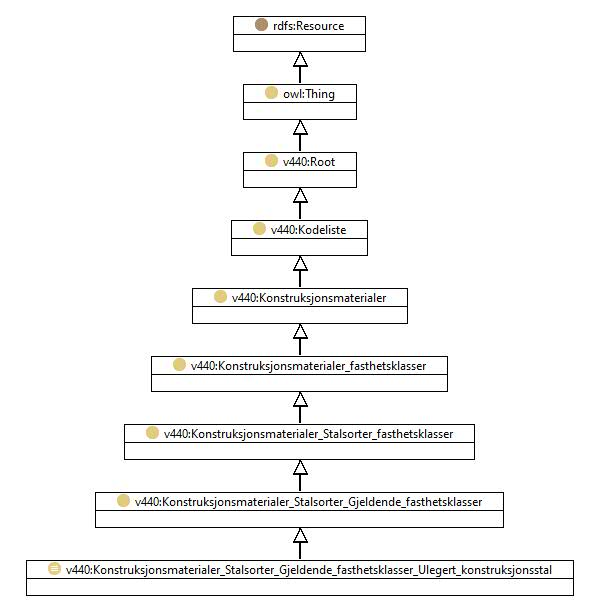

https://ontologi.atlas.vegvesen.no/v440/core/v440-owl#Konstruksjonsmaterialer_Stalsorter_Gjeldende_fasthetsklasser_Ulegert_konstruksjonsstal
Class v440:Konstruksjonsmaterialer_Stalsorter_Gjeldende_fasthetsklasser_Ulegert_konstruksjonsstal

rdf:type
owl:Class
rdfs:label
Unalloyed structural steels according to NS-EN 10025 (1993)
Ulegert konstruksjonsstål i henhold til NS-EN 10025 (1993)